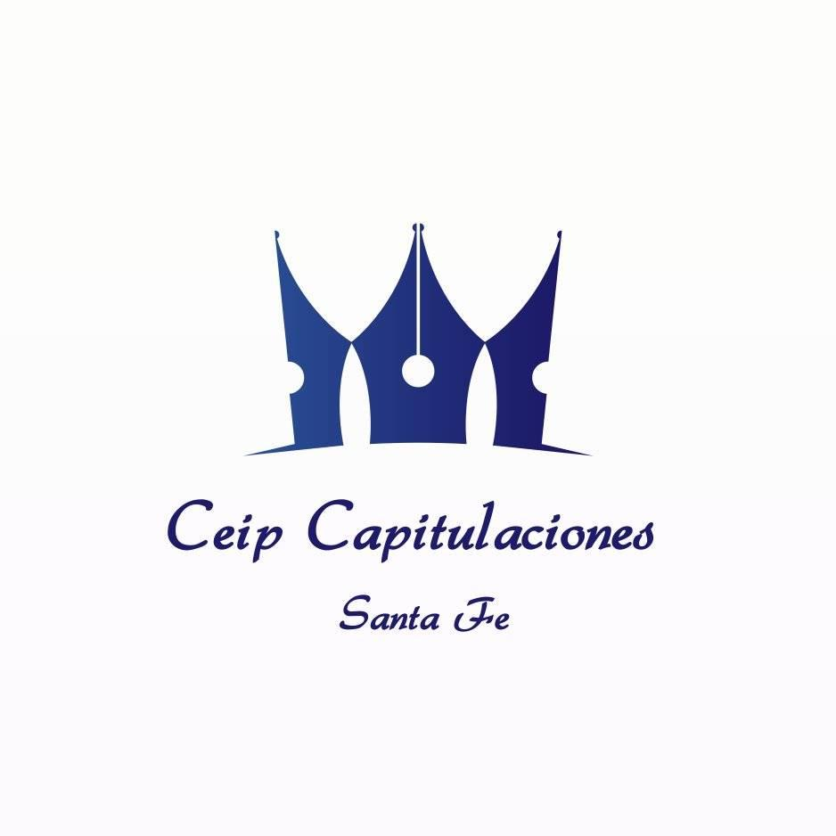

Descubre Santa Fe de la mejor manera
Recorrido por los 7 monumentos más importantes de Santa Fe
Las 4 puertas históricas que daban acceso a la ciudad amurallada
Los 3 monumentos imprescindibles si tienes poco tiempo
Esta guía interactiva ha sido creada por el CEIP Capitulaciones de Santa Fe para que alumnos, familias y visitantes puedan descubrir los monumentos más importantes de nuestra ciudad.
Santa Fe · Granada · 1491
CEIP Capitulaciones - Gestión de contenidos